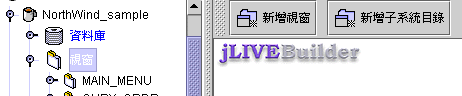
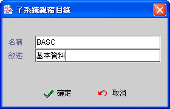
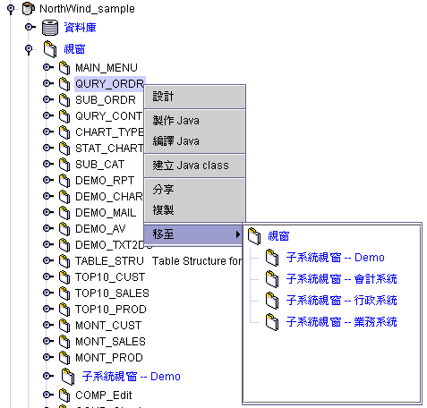
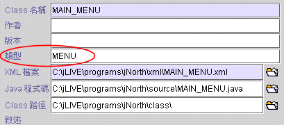
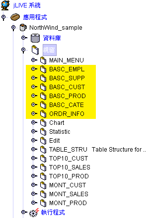
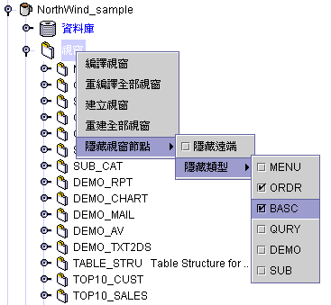
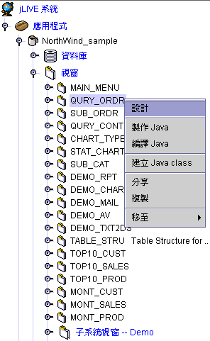
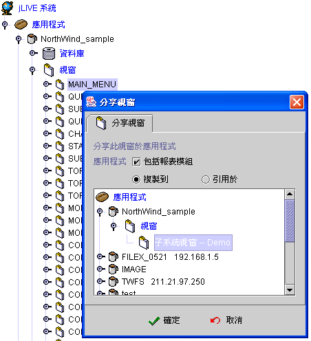
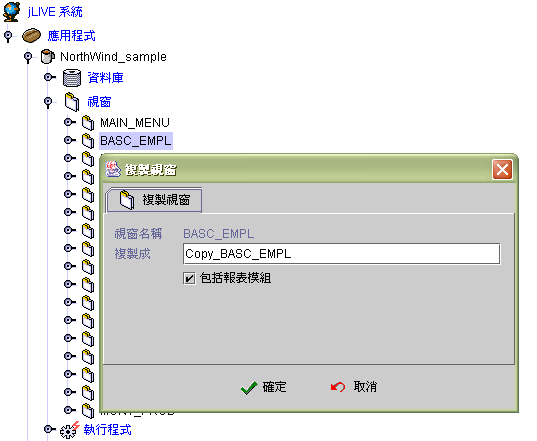
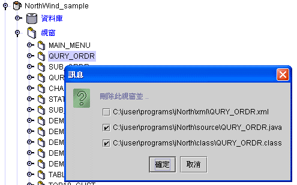

|

6.3
視窗管理 (form arrangement)
新增子系統目錄 (create subsystem node)
視窗節點位置調整 (form node adjust)
視窗隱藏
(form hidden)
視窗分享
(form shared)
視窗複製
(form duplicated)
視窗移除 (remove form)
新增子系統目錄 (create subsystem node)
主控面版
(main consol) 的視窗節點結構是樹狀結構，視窗
(main form) 之下，可以是視窗模組
(form) 或是子系統目錄 (subsystem form)。設計師可以在視窗 (main form) 或子系統目錄下，新增子系統目錄及視窗模組。

按下新增子系統目錄，系統會詢問子系統目錄名稱，並新增一子系統目錄。
目錄名稱請輸入英文或系統代碼，該名稱於授權作業時可以引用於目錄授權項目。安全控管系統中的同步作業，將會把子系統目錄及名稱同步新增至 CMM_BASC_DIR
資料表中。

▲Top
視窗節點位置調整 (form node adjust)
視窗節點位置，在同一系統或子系統下，可以使用主選單按鍵
  調整
移動上下次序。
調整
移動上下次序。
調整或移動視窗模組 (form) 至其他子系統目錄，
請先按取視窗或子系統目錄，按滑鼠右鍵，並選取【移至】選單上的子系統目錄。

▲Top
視窗隱藏 (form hidden)
【類型】工作視窗分類，可於控制面板檢視時暫時隱藏
；在設計應用程式時，可以將不同視窗類型分類，然後依需要，顯示於控制面版上
(control panel)，以方便管理或找尋，尤其在多人共同發展時更顯的方便。可以快速的找出所要的視窗。要使用視窗管理的功能時，請先點選【視窗】節點，然後按滑鼠右鍵，
【隱藏視窗節點】【隱藏類型】就可以看到所有的功能項目。

如果要將【ORDR】【BASC】這兩個類型隱藏，只要將這兩項核選
(checked) 即可。作用的範圍如下圖的標示區。

如上所述，將【ORDR】【BASC】兩個種類核選 (checked)。

-
設計 (design)：進入設計畫面。
-
製作 Java™ (make Java™)：將設計師所設計的視窗模組，產生
Java™ 原始檔 (Java™ source code)。
-
編譯 Java™ (compile Java™)：將
視窗模組的 Java™ 原始檔 (Java™ source code)，編譯 (compile) 成可執行的 Java™
class 檔。
-
建立 Java™ class (build Java class)：將設計師所設計的視窗模組，產生
Java™ 原始檔 (Java™ source code) 後，再將視窗模組的 Java™ 原始檔 (Java™ source code)，編譯
(compile) 成可執行的 Java™ class 檔。

▲Top
視窗分享 (form shared)
視窗在
jLIVE Builder™
中是一個物件，可以將此物件完整的複製到其他的應用程式，或在其他的應用程式中建立一個視窗參照的指標，指定引用此一視窗。兩者的分別在於，如果選擇 複製到
(copy to)，那麼複製後已成為兩個視窗
，彼此不再有任何關聯；如果選擇 引用於
(refer by)，那麼原視窗有任何的更新，都將反應於引用的應用程式中。不論複製到或引用於，設計者都必須自行維護視窗模組中，對於資料庫別名的使用及開啟引用其他視窗名稱的一致性。
-
應用程式 (application)：選擇另一個要分享此視窗的應用程式，及選取視窗置放位置。
-
包括報表模組 (include report module)：連報表模組也一併分享。
-
複製到 (copy to)：將此視窗設計的
XML 檔複製到另一個應用程式內。
-
引用於 (refer by)：在另一個應用程式建立一個參照指標引用此視窗，並沒有實際的複製檔案。

▲Top
視窗複製 (form duplicate)
在同一個應用程式內複製此視窗。使用的時機是：當有兩個視窗設計邏輯相類似時，可以先行複製再修改部份差異的邏輯，以節省設計時間；或者是由系統規劃師，先行建立各種作業功能的通用樣板
(pattern) 視窗，設計者按作業需求複製各種不同的樣板視窗，再進行細部的修改。
-
視窗名稱 (form name)：所要複製的視窗名稱。
-
複製成 (duplicate as)：為複製出來的視窗命名，系統預設在前方加上
" Copy_ " 以方便區別。
-
包括報表模組 (include report module)：連同報表一併複製。

▲Top
視窗移除 (remove form)
按選視窗屬性設定頁的移除按鍵 ，移除視窗模組。移除時可以選擇是否將相關的
XML、 Java 、class 等檔案一倂移除。系統在新增建立視窗模組時，會先檢查該名稱的 XML 是否存在，如果存在會詢問設計師是否引用舊檔的 XML。 ，移除視窗模組。移除時可以選擇是否將相關的
XML、 Java 、class 等檔案一倂移除。系統在新增建立視窗模組時，會先檢查該名稱的 XML 是否存在，如果存在會詢問設計師是否引用舊檔的 XML。

▲Top
Copyright © 2001~
2004 Probe Technology . All Rights Reserved.
Questions, comments,
and suggestions to Service@probe.com.tw
|